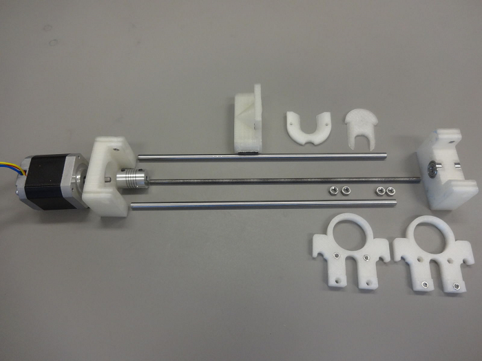

Make Your Own Syringe Pumps

While we love the syringe pumps from SyringePump.com (really!), consider making your own syringe pumps instead with the Open Source Syringe Pump Library.
If you want the with it, here's a more professional looking arduino-based setup.